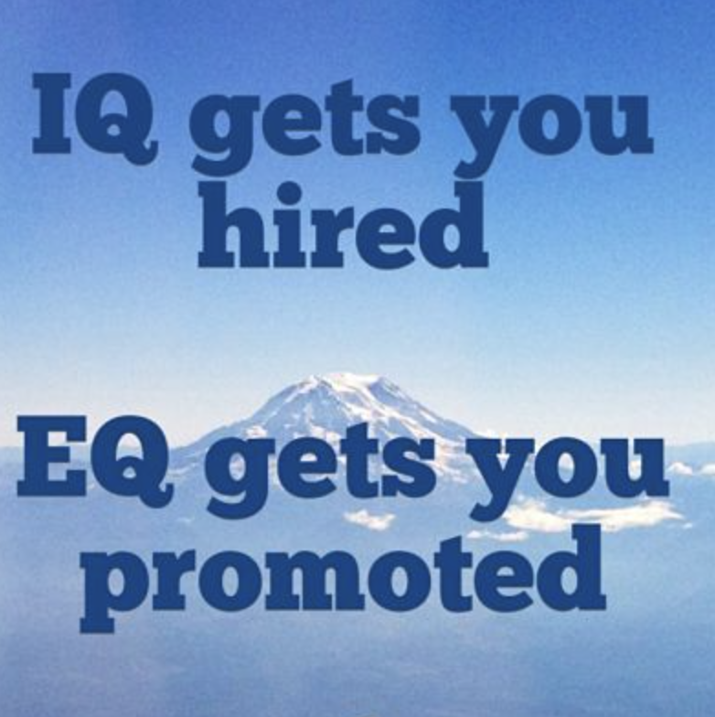
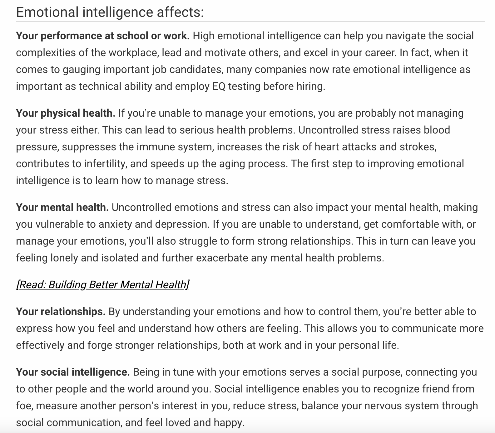

Emotional Intelligence Exploration
What is Emotional Intelligence?
Emotional intelligence (also known as emotional quotient or EQ) is the ability to understand, use, and manage your own emotions in positive ways to relieve stress, communicate effectively, empathise with others, overcome challenges and defuse conflict. Having a good level of Emotional Intelligence can help you to build relationships that are stronger, give you a better headspace to succeed at school and work, and achieve your career and personal goals. It can also allow you to connect with your internal feelings, turn your intentions into action, and make informed decisions about what matters most to you.
As described by Helpguide.org, Emotional intelligence is commonly defined by four attributes:
- Self-management - You’re able to control impulsive feelings and behaviours, manage your emotions in healthy ways, take initiative, follow through on commitments, and adapt to changing circumstances.
- Self-awareness - You recognise your own emotions and how they affect your thoughts and behaviour. You know your strengths and weaknesses, and have self-confidence.
- Social-awareness - You have empathy. You can understand the emotions, needs, and concerns of other people, pick up on emotional cues, feel comfortable socially, and recognise the power of dynamics in a group organization.
- Relationship management - You know how to develop and maintain good relationships, communicate clearly, inspire and influence others, work well in a team, and manage conflict.
How is it different to IQ?
IQ or Intelligence quotient, is a score an individual gets when completing one of many standardised tests to asses their level of intelligence. It differs from EQ because it focuses more measuring an individuals academic abilities where as EQ is a better indicator for measuring ones ability to manage, control, and express their emotions. While IQ is a great indicator for knowledge and skill capability, EQ is a better indicator for an individuals success in the workplace especially in team environments because of their ability to understand, empathise, and connect with the people around them.
EQ versus IQ comparison chart
| EQ | IQ | |
|---|---|---|
| Stands for | Emotional Quotient (aka emotional intelligence) | Intelligence Quotient |
| Definition | Emotional quotient (EQ) or emotional intelligence is the ability to identify, assess, and control the emotions of oneself, of others, and of groups. | An intelligence quotient (IQ) is a score derived from one of several standardized tests designed to assess intelligence. |
| Abilities | Identify, evaluate, control and express emotions ones own emotions; perceive, and assess others' emotions; use emotions to facilitate thinking, understand emotional meanings. | Ability to learn, understand and apply information to skills, logical reasoning, word comprehension, math skills, abstract and spatial thinking, filter irrelevant information. |
| In the workplace | Teamwork, leadership, successful relations, service orientation, initiative, collaboration. | Success with challenging tasks, ability to analyze and connect the dots, research and development. |
| Identifies | Leaders, team-players, individuals who best work alone, individuals with social challenges. | Highly capable or gifted individuals, individuals with mental challenges and special needs. |
| Origin | 1985, Wayne Payne's doctoral thesis "A Study of Emotion: Developing Emotional Intelligence" Popular use came in Daniel Goleman's 1995 book "Emotional Intelligence - Why it can matter more than IQ" | 1883, English statistician Francis Galton's paper "Inquiries into Human Faculty and Its Development" First application came in French psychologist Alfred Binet's 1905 test to assess school children in France. |
| Popular Tests | Mayer-Salovey-Caruso Test (emotion-based problem-solving tasks); Daniel Goleman model Score (based on emotional competencies). | Stanford-Binet test; Wechsler; Woodcock-Johnson Tests of Cognitive Abilities. |
Why is EQ important?
As you may see around you, it is not always the smartest people who are the most successful or fulfilled in life. There are times where an individual may have a high IQ and be academically smart but lack in social environments, struggle working in teams, and/or in their personal relationships. IQ on it’s own is not enough to achieve success in life. Your IQ will help you to understand and learn new skills/concepts for school and work, but it is your EQ that will help you to manage the stress and emotions when applying for and working in your jobs. Both are just as important as the the other, but working in tandem they can help you to achieve the goals that you want in life more effectively. Here are the four key aspects that Emotional intelligence affects in your life (as described by helpguide.org):
